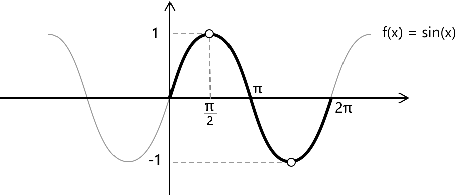

Функція синуса
Функція синус
Функція синус \(f(x) = \sin(x) \) кожному куту \(x\), вираженому в радіанах, присвоює відповідне значення синуса. Її графіком є періодична хвиля з періодом \(2 \pi \) та амплітудою 1, що коливається між \(-1\) та \(1\). Функція \( f(x) = \cos x \) має всі дійсні числа у своїй області визначення, але її область значень становить \( -1 \leq \cos(x) \leq 1 \).

Разом із функцією косинус вона представляє одну з фундаментальних моделей періодичних хвиль і широко використовується для опису циклічних явищ у фізиці, інженерії та математиці. Наприклад, у простому гармонічному русі у фізиці функція синус зазвичай з'являється в рівняннях як для зміщення, так і для швидкості, описуючи коливальну поведінку таких систем, як пружини та маятники.
Властивості
- Область визначення: \(x \in \mathbb{R} \)
- Область значень: \(y \in \mathbb{R} : -1 \leq y \leq\ 1 \)
- Періодичність: періодична за \(x\) з періодом \( 2 \pi \)
- Парність: непарна, \( \sin(-x) = -\sin(x)\)
- Корені: \(x = \pi n, \quad n \in \mathbb{Z} \)
- Ціле значення кореня: \(x=0\)
- Точки максимуму та мінімуму: \( \sin(x) \) досягає свого максимуму \(1\) при \( x = \dfrac{\pi}{2} + 2k \pi \) з \( k \in \mathbb{Z} \) та свого мінімуму \(-1\) при \( x = \dfrac{3\pi}{2} + 2k \pi \) з \( k \in \mathbb{Z} \).
Границі, похідні та інтеграли функції косинус
Фундаментальна границя, що включає функцію синус, відображає поведінку \(\sin(x)\) в околі початку координат і відіграє центральну роль у диференціальному численні. Коли \(x\) наближається до нуля, значення \(\sin(x)\) стає все ближчим до самого \(x\), якщо обидва виміряні в радіанах. Це відображає той факт, що поблизу початку координат крива синуса майже не відрізняється від прямої \(y = x\). Цей зв'язок формалізується наступною границею:
\[ \text{1.} \quad \lim_{x \to 0} \frac{\sin(x)}{x} = 1 \]
Функція \(\sin(x)\) є неперервною та диференційовною для кожного дійсного значення \(x\). Її поведінка є гладкою та регулярною на всій дійсній прямій, без точок розриву або недиференційованості. Більше того, оскільки \(\sin(x)\) диференційовна всюди, її похідна визначена для всіх дійсних чисел і має вигляд:
\[ 2. \quad \frac{d}{dx}\,\sin(x) = \cos(x) \]
Оскільки похідна від \( -\cos(x) \) дорівнює \( \sin(x) \), невизначений інтеграл функції синус можна записати як: \[ 3. \quad \int \sin(x) dx = -\cos(x) + c\]
Вичерпний огляд тригонометричних інтегралів, разом із найкориснішими методами перетворення та підстановки для обробки складніших випадків, доступний на сторінці про інтеграли тригонометричних функцій.
Альтернативна форма функції \( \sin(x) \) з використанням уявних чисел задається формулою Ейлера, де \( e^{ix} \) — це показникова функція з основою \( e \), а \( I \) — уявна одиниця: \[ 4. \quad \sin(x) = \frac{e^{ix} - e^{-ix}}{2i} \]